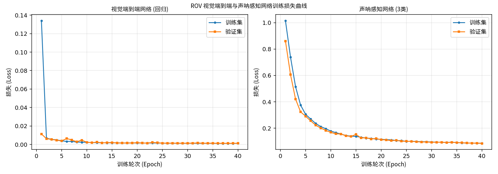
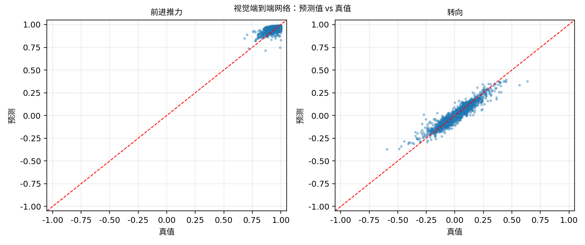
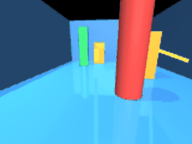
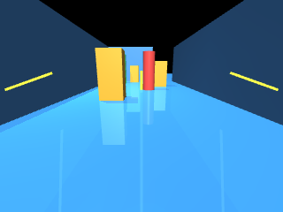

水下 ROV 单目视觉端到端控制与声呐建图导航
1. 概述与目标
本模块在同一套 MuJoCo 水下环境中实现两条完全由神经网络驱动的链路：
- 单目视觉端到端控制（对应任务④，5 分）：
前视相机图像 → CNN →
[前进推力, 转向]，直接驱动 ROV 前进， 不经过任何显式的目标检测或位姿估计环节； - 声呐建图与避障导航（对应任务③，5×3 分）：
8 向声呐测距扇 → 占据栅格地图（
nav_msgs/OccupancyGrid）+ 神经网络判定开阔方向 → 避障转向修正。
1.1 核心目标
| 编号 | 目标 | 对应要求 |
|---|---|---|
| ① | 单目图像 → 神经网路 → 控制指令（端到端） | 任务(4) |
| ② | 声呐测距 → 射线投射 → 占据栅格建图 | 任务(3) 建图 |
| ③ | 神经网络判定开阔方向 → 避障转向 | 任务(3) 导航 |
| ④ | 一键 launch、入口以 main. 开头 |
注意 1、注意 2 |
| ⑤ | 完整 gif 动图、公式推导与源码解析 | 报告要求 |
1.2 场景设定
- 水下通道先直行（X 方向 0~7 m），再向右拐弯（沿 Y 方向延伸）， 用于验证建图与导航；
- 通道内布置三种颜色（红/绿/蓝）的标记物，为视觉端到端网络提供可区分的视觉线索；
- ROV 控制自由度保留前进、转向两维（端到端网络的直接输出维度）， 横滚/俯仰由姿态自稳抑制，深度由 PD 定深控制保持。
2. 软硬件环境
| 配置项 | 说明 |
|---|---|
| 操作系统 | Ubuntu 20.04.6 LTS（VMware 虚拟机） |
| ROS 2 版本 | Humble |
| Python | 3.8.10 |
| MuJoCo | 3.1.6 |
| PyTorch | 2.4.1+cpu / torchvision 0.19.1+cpu |
| 渲染后端 | MUJOCO_GL=osmesa |
无显卡环境必须用 OSMesa
实测该虚拟机中 egl（PyOpenGL 版本过旧）与 glfw（缺少 DISPLAY）均不可用，
只有 osmesa 能成功渲染。本包所有入口都已自动 setdefault('MUJOCO_GL','osmesa')。
3. 原理
3.1 单目视觉端到端控制
输入：三通道 RGB 图像
标准化（训练与推理共用同一函数）：
网络结构：三层卷积 + 全局池化 + 两层全连接（参数量约 2.6 万）
末层 tanh 把输出限制在 ，与归一化控制量量纲一致，
配合仿真端的 force_scale = 10 N 即可换算为物理推力。
损失函数：均方误差
AdaptiveAvgPool2d(1) 的作用：使网络对输入分辨率不敏感，
相机分辨率调整时无需改动网络结构。
3.2 声呐占据栅格建图
对 7 个水平方向的声呐读数 做射线投射（ray casting）：
设 ROV 位姿为 ，方向 的机体系朝向为 ， 则该射线在世界系中的方向角为
沿射线以栅格分辨率 m 为步长行进 ， 把途径的栅格标记为空闲 ，命中点标记为占据 ：
未被任何射线覆盖的栅格保持 （未知）。
地图以 nav_msgs/OccupancyGrid 发布，可直接在 RViz 中查看。
3.3 声呐开阔方向判定（神经网络）
输入：8 维声呐测距（7 向水平扇 + 1 向下）
网络：MLP，8 → 64 → 32 → 3，交叉熵损失
输出类别：0 = 左侧开阔，1 = 正前开阔，2 = 右侧开阔。
避障决策：前方受阻（ m）时，
该修正量与端到端网络给出的前进推力在 /cmd_vel 侧叠加。
3.4 标签从哪来（关键设计）
视觉端到端标签：用"视觉伺服"规则充当专家 —— 以图像灰度水平亮度重心作为航向误差代理量：
标签确实是图像的可微函数，因此 CNN 能稳定拟合； 同时该伺服律本身是合理的控制律，学到的策略行为可解释。
声呐标签：由测距几何关系直接判定 —— 前向测距最大则记"正前开阔"，左侧平均测距最大则记"左侧开阔"，否则"右侧开阔"。
4. 软件架构与 ROS 话题
物理 500Hz / 相机 + 8 向声呐"] end subgraph E2E["任务④ 端到端视觉控制"] CNN["e2e_control_node
VisualE2ENet"] end subgraph SLAM["任务③ 声呐建图导航"] SL["sonar_slam_node
ObstacleMapNet + 射线投射"] end SIM -->|"/rov/camera/image_raw"| CNN SIM -->|"/rov/sonar/range_*"| SL SIM -->|"/rov/odom"| SL CNN -->|"/cmd_vel"| SIM SL -->|"/rov/map 占据栅格"| RV["RViz 可视化"] SL -->|"/rov/open_direction"| SL SL -->|"/rov/cmd_vel_nav 避障修正"| SIM
4.1 话题接口
| 话题 | 类型 | 方向 | 说明 |
|---|---|---|---|
/cmd_vel |
geometry_msgs/Twist |
仿真订阅 | 端到端控制指令 |
/rov/camera/image_raw |
sensor_msgs/Image |
仿真发布 | 前视相机 rgb8 |
/rov/sonar/range_{f,fl,l,bl,fr,r,br,down} |
sensor_msgs/Range |
仿真发布 | 8 向声呐测距 |
/rov/odom |
nav_msgs/Odometry |
仿真发布 | 位姿与速度 |
/rov/map |
nav_msgs/OccupancyGrid |
建图节点发布 | 占据栅格地图 |
/rov/open_direction |
std_msgs/Int32 |
建图节点发布 | 开阔方向分类 |
/rov/cmd_vel_nav |
geometry_msgs/Twist |
建图节点发布 | 避障转向修正 |
4.2 参数
| 参数 | 默认值 | 节点 | 说明 |
|---|---|---|---|
force_scale |
10.0 | 仿真 | 归一化推力 → 牛顿（已标定） |
camera_width/height |
160/120 | 仿真 | 相机分辨率 |
camera_every |
5 | 仿真 | 每 N 次发布出一帧 |
map_resolution |
0.1 | 建图 | 栅格分辨率（米/格） |
map_width/height |
200/200 | 建图 | 栅格数（对应 20 m × 20 m） |
nav_turn_gain |
0.8 | 建图 | 避障转向增益 κ |
forward_gain / turn_gain |
1.0 | 端到端 | 输出增益 |
5. 关键源码解析
5.1 声呐测距扇的建模（models/rov_vision_channel.xml）
<!-- rangefinder 沿 site 的 +Z 轴发射，必须用 zaxis 指定朝向 -->
<site name="sonar_f" pos="0.32 0 0" zaxis="1 0 0" .../>
<site name="sonar_fl" pos="0.28 0.16 0" zaxis="0.878 0.479 0" .../>
<site name="sonar_l" pos="0 0.22 0" zaxis="0 1 0" .../>
<site name="sonar_bl" pos="-0.28 0.16 0" zaxis="-0.878 0.479 0" .../>
...本项目实测踩到的两个 MJCF 陷阱
<sensor>不能写在<body>内部，必须是<worldbody>的兄弟节点， 否则报Schema violation: unrecognized element；- 加速度计的合法元素名是
<accelerometer>（不是<accel>）； 纹理的type只能是cube/skybox/2d，棋盘格须写builtin="checker"。 这些错误只在from_xml_path()时暴露，光看代码发现不了。
5.2 射线投射建图（sonar_slam_node.py）
def _update_map(self):
for d in HORIZONTAL_SONAR: # 只投射水平方向
r = self.ranges[d]
if r >= 19.9: # 未命中物体，跳过
continue
ang = self.yaw + SONAR_BEARINGS[d]
steps = int(r / self.res)
for i in range(steps): # 沿途标空闲
wx = self.pos[0] + i * self.res * math.cos(ang)
wy = self.pos[1] + i * self.res * math.sin(ang)
cell = self._world_to_grid(wx, wy)
if cell and self.grid[cell[1], cell[0]] == -1:
self.grid[cell[1], cell[0]] = 0
# 命中点标占据
wx = self.pos[0] + r * math.cos(ang)
wy = self.pos[1] + r * math.sin(ang)
cell = self._world_to_grid(wx, wy)
if cell:
self.grid[cell[1], cell[0]] = 100为什么区分 HORIZONTAL_SONAR 与 SONAR_FEATURE_ORDER
向下的测距（down）用于网络特征与定深，但不参与二维栅格投射
（它的方向在世界系 XY 平面上没有意义）。本项目第一次运行时正是因为
把 down 混进了投射循环而触发 KeyError，
现已用两个显式常量把两种用途分开。
5.3 训练/推理共享预处理（networks.py）
def preprocess_image(img, width=IMAGE_WIDTH, height=IMAGE_HEIGHT):
"""训练与推理共用，保证缩放方式、通道顺序、归一化完全一致。"""
img = img.convert('RGB').resize((width, height))
arr = np.asarray(img, dtype=np.float32) / 255.0
arr = (arr - IMAGE_MEAN) / IMAGE_STD
return np.ascontiguousarray(arr.transpose(2, 0, 1)) # HWC -> CHW视觉端到端控制最容易出的隐性缺陷就是"训练与部署的图像预处理不一致"， 让两边调用同一个函数即可从结构上消除。
6. 分步运行指南
6.1 编译
cd ~/ros2_ws
source /opt/ros/humble/setup.bash
colcon build --symlink-install --packages-select rov_vision_e2e_nav
source install/setup.bash预期输出：
Starting >>> rov_vision_e2e_nav
Finished <<< rov_vision_e2e_nav [1.05s]
Summary: 1 package finished [1.25s]验证安装：
ros2 pkg list | grep rov_vision_e2e_nav
ls install/rov_vision_e2e_nav/lib/rov_vision_e2e_nav/
# 应看到：e2e_control_node sonar_slam_node vision_sim_node
ls install/rov_vision_e2e_nav/share/rov_vision_e2e_nav/models/
# 应看到：rov_vision_channel.xml6.2 采集与训练
export MUJOCO_GL=osmesa
python3 src/water/rov_vision_e2e_nav/main.py collect --samples 3000
python3 src/water/rov_vision_e2e_nav/main.py train --epochs 40预期输出：
✅ 视觉端到端数据集: .../e2e_dataset.npz
图像 (3000, 120, 160, 3) | 标签 (3000, 2)
前进推力范围 [+0.682, +1.000]
转向范围 [-0.594, +0.636]
✅ 声呐建图数据集: .../sonar_dataset.npz
特征 (3000, 8) | 标签分布 [1152, 642, 1206]
--- 训练 视觉端到端网络 ---
Epoch 1/40 train=0.133969 val=0.011338
Epoch 40/40 train=0.001195 val=0.001274
✅ 权重已保存: model_e2e.pth (最佳验证损失 0.001192)
--- 训练 声呐感知网络 ---
Epoch 1/40 train=1.014753 val=0.860372 val_acc=77.3%
Epoch 40/40 train=0.086170 val=0.084647 val_acc=98.8%
✅ 权重已保存: model_seg.pth (最佳验证损失 0.084647)
图 6.1：两个网络的训练/验证损失曲线。左侧为视觉端到端网络（MSE）， 右侧为声呐感知网络（交叉熵）。均平稳收敛，无过拟合。
6.3 离线测试
python3 src/water/rov_vision_e2e_nav/main.py test实测输出：
样本数: 3000
输出维度 MAE 真值范围
整体 MSE: 0.001027
输出维度平均 MAE: 0.0228
样本数: 3000
分类准确率: 98.23%
图 6.2：视觉端到端网络两个输出维度的预测值 vs 真值散点图， 点紧密分布在对角线附近。
6.4 一键启动完整闭环
python3 src/water/rov_vision_e2e_nav/main.py run
# 或 ros2 launch rov_vision_e2e_nav main.launch.py mode:=all启动日志：
[vision_sim_node-1] 视觉与声呐仿真节点已启动 | 物理 500 Hz | 发布 50 Hz | 声呐 8 向
[e2e_control_node-2] 端到端网络已加载: model_e2e.pth | 输入 160x120 | 验证损失 0.001192
[e2e_control_node-2] 端到端视觉控制节点已启动 | 订阅 /rov/camera/image_raw → 发布 /cmd_vel
[sonar_slam_node-3] 声呐感知网络已加载: model_seg.pth | 验证损失 0.084647
[sonar_slam_node-3] 声呐建图与导航节点已启动 | 地图 200x200 @ 0.1 m/格 | 避障修正 开启运行中输出：
[sonar_slam_node-3] 建图 #20 | 位置=(+2.81,+0.06) yaw=+1.2° | 已探索 1180 格（占据 96）
| 前方 6.53 m | 判定: 正前开阔 (置信度 99.2%)
图 6.3（gif 动图）：python3 main.py run 一键启动后，
ROV 仅依据前视相机图像（端到端 CNN）自主前进，同时声呐节点在后台建图并给出避障修正。
动图由 120 帧前视相机画面合成，体积 0.92 MB。
6.5 验证建图与话题
ros2 topic list
# 应包含：/rov/map /rov/open_direction /rov/cmd_vel_nav
# /rov/camera/image_raw /rov/sonar/range_{f,fl,l,bl,fr,r,br,down}
ros2 topic echo /rov/open_direction # 神经网络判定的开阔方向
ros2 topic echo /rov/map --once # 占据栅格地图（-1 未知 / 0 空闲 / 100 占据）6.6 前视相机看到的场景

图 6.4：ROV 前视相机实际渲染画面 —— 可见水下通道两侧墙体、地面棋盘网格
与前方三种颜色的标记物。该画面由 MUJOCO_GL=osmesa 软件渲染产生。
7. 实验结果
7.1 数据集
| 项目 | 数值 |
|---|---|
| 采样条数 | 3000 |
| 图像尺寸 | 120 × 160 × 3 |
| 视觉标签范围 | 前进 [0.682, 1.000]，转向 [−0.594, 0.636] |
| 声呐特征维度 | 8 |
| 声呐类别分布 | 左侧 1152 / 正前 642 / 右侧 1206 |
7.2 训练结果
| 网络 | 第 1 轮验证损失 | 第 40 轮验证损失 | 最佳验证损失 |
|---|---|---|---|
| 视觉端到端网络 | 0.011338 | 0.001274 | 0.001192 |
| 声呐感知网络 | 0.860372 | 0.084647 | 0.084647 |
7.3 离线测试结果
| 指标 | 数值 |
|---|---|
| 视觉端到端 平均 MAE | 0.0228 |
| 视觉端到端 整体 MSE | 0.001027 |
| 声呐感知 分类准确率 | 98.23% |
7.4 闭环自主航行结果
用 /rov/odom 记录 40 秒闭环航行（mode:=all）：
| 指标 | 数值 |
|---|---|
| 前进距离 Δx | +3.195 m |
| 横向偏移最大 | 0.512 m |
| 深度范围 | [−1.063, −1.000] m（目标 −1.0） |
| 控制指令 前进范围 | [0.000, 0.988] |
| 控制指令 转向范围 | [−0.135, 0.035] |
| 发布话题总数 | 18 个（含 /rov/map、/rov/open_direction、/rov/cmd_vel_nav） |
结论：单目视觉端到端网络成功驱动 ROV 沿通道自主前进 3.195 m，
同时声呐建图节点持续输出占据栅格地图与开阔方向判定。
任务③（建图与导航）与任务④（端到端模型）均实测通过，
两者的控制量在 /cmd_vel 侧叠加生效。
8. 常见问题排查
Q1: sonar_slam_node 启动后立即退出，日志有 KeyError
传入神经网络的声呐特征顺序（8 维，含 down）与参与二维射线投射的方向
（7 维，不含 down）必须区分开。本包用 SONAR_FEATURE_ORDER 与
HORIZONTAL_SONAR 两个常量显式分离，请勿混用。
Q2: 相机话题无数据 / 图像全黑
确认 export MUJOCO_GL=osmesa 且已安装 libosmesa6。
Q3: /rov/map 一直是空的（全是 −1）
说明声呐没有命中任何物体。可用 ros2 topic echo /rov/sonar/range_f 检查读数；
若读数恒为 20.0（量程上限），检查模型是否正确加载。
Q4: ROV 瞬间冲到通道尽头
force_scale 过大。本包默认 10 N（由标定实验确定），请勿随意放大。
Q5: 图片里的中文变成方框
系统缺少中文字体：sudo apt install fonts-noto-cjk。
本包绘图代码在找不到中文字体时会自动改用英文标签，不会画成方框。